Nous avons construit un outil en ligne qui, à partir des conditions d'une parcelle (climat, niveau d'intensification agricole, usage d'engrais et d'irrigation), estime le rendement d'une culture et classe les dix cultures étudiées de la plus à la moins productive.
×13
écart de rendement entre la culture la plus et la moins productive (pomme de terre 16,2 t/ha contre sorgho 1,2 t/ha)
+81 %
rendement avec engrais et irrigation, par rapport à une parcelle sans aucun des deux
−19 %
d'erreur de prédiction par rapport à une estimation « au bon sens » (le rendement habituel de la culture)
2,6 t/ha
écart moyen entre prédiction et réalité, mesuré sur 21 pays jamais vus par le modèle
Ce que les données nous apprennent
Le choix de la culture est, de loin, le premier levier. Il explique à lui seul plus de la moitié des différences de rendement observées dans le monde.
La chaleur pénalise la plupart des cultures (maïs, sorgho, pomme de terre, blé, riz), mais le manioc la supporte bien, voire en profite.
L'engrais (+45 %) et l'irrigation (+36 %) augmentent fortement le rendement, et leurs effets s'additionnent.
Les régions à agriculture intensive (usage élevé d'intrants) obtiennent des rendements 2 à 5 fois supérieurs, signe de l'effet global de la modernisation.
Nos recommandations
Aux agriculteurs : choisir d'abord une culture adaptée à son climat (cultures tolérantes à la chaleur en région chaude), puis investir en priorité dans la fertilisation et l'irrigation.
À Agritech Answers : utiliser l'outil pour comparer des cultures et estimer des ordres de grandeur, et l'enrichir rapidement avec les prix de vente et les coûts par culture : sans eux, l'outil classe les cultures en tonnes, pas encore en profit.
À garder en tête
Les données disponibles décrivent des pays (moyennes nationales annuelles), pas des parcelles : les prédictions sont des ordres de grandeur, avec une marge d'erreur de 25 à 60 % selon la culture (partie 4).
2. Les données : deux sources complémentaires
Deux jeux de données nous ont été fournis. Aucun ne suffit seul : nous les avons combinés pour tirer parti de ce que chacun apporte.
Rendements mondiaux (FAO / Banque mondiale)
Parcelles simulées (Kaggle)
Contenu
Rendement réel par pays × culture × année, avec pluie, température et pesticides du pays
1 million de parcelles simulées : pluie, température, sol, engrais, irrigation, rendement
Couverture
101 pays, 1990–2013, 10 cultures
6 cultures, régions génériques (Nord, Sud…), sans pays ni année
Ce qu'il apporte
Les différences entre cultures : indispensable pour recommander
L'effet de l'engrais et de l'irrigation, absents des données mondiales
Sa limite
Des moyennes nationales, pas des mesures de parcelle
Données artificielles : la culture n'y a aucun effet sur le rendement
Comment nous les avons combinés
Les deux jeux n'ont en commun ni pays ni année : la seule passerelle est la culture. Le moteur de prédiction apprend donc sur les données mondiales réelles (ce qui permet de départager les cultures), puis sa prédiction est ajustée selon l'usage d'engrais et d'irrigation, dont l'effet a été mesuré sur les parcelles simulées. Cet effet étant identique pour toutes les cultures simulées, nous l'appliquons aussi aux cultures absentes de ce jeu.
Ce que le nettoyage a corrigé
Des doublons massifs : le fichier mondial répétait la même observation pour chaque station météo d'un pays (jusqu'à 22 fois pour l'Inde). Une fois corrigé, il reste 13 130 observations réelles sur 28 242 lignes ; sans cette correction, l'Inde pesait 14 % des données au lieu d'environ 1 %.
Des valeurs impossibles : 231 parcelles simulées avaient un rendement négatif ; elles ont été retirées (0,02 % du jeu).
Des unités différentes : les rendements mondiaux, exprimés en hectogrammes par hectare, ont été convertis en tonnes par hectare.
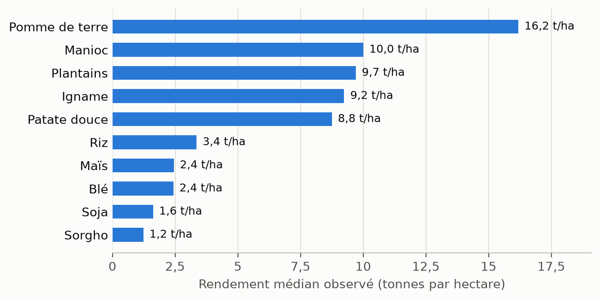
Figure 1 – Rendement habituel de chaque culture (données mondiales). Les tubercules (pomme de terre, manioc, igname, patate douce, plantains) produisent bien plus de tonnes par hectare que les céréales et le soja ; ce sont aussi des cultures plus lourdes et riches en eau, ce qui compte pour la rentabilité (partie 6).
3. Les variables clés du rendement
Trois analyses concordantes, détaillées dans les notebooks du projet, identifient ce qui fait varier le rendement : une analyse en composantes principales (ACP, qui repère les variables qui évoluent ensemble), la mesure du lien de chaque variable avec le rendement, et l'importance des variables pour le modèle (figure 2).
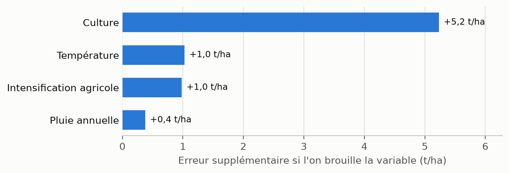
Figure 2 – Ce sur quoi s'appuie le modèle. On « brouille » une variable à la fois et on mesure de combien l'erreur augmente : plus elle augmente, plus la variable compte. Sans la culture, l'erreur bondit de 5,2 t/ha.
Variable
Rôle
Ce qu'il faut en retenir
Culture
1er facteur, de loin
Explique 58 % des différences de rendement dans les données mondiales.
Engrais
Levier de pratique
≈ +45 % de rendement (parcelles simulées).
Irrigation
Levier de pratique
≈ +36 % de rendement ; s'additionne à l'engrais.
Température
Facteur climatique
Effet surtout négatif : les régions chaudes ont des rendements plus faibles, à culture égale (sauf manioc).
Intensification agricole
Indicateur du contexte
Mesurée par l'usage total de pesticides du pays : reflète le niveau de modernisation de l'agriculture, pas un effet direct des pesticides.
Pluie annuelle
Faible à l'échelle d'un pays
Décisive dans les parcelles simulées, quasi muette dans les données mondiales : une moyenne nationale annuelle est trop grossière pour décrire l'eau disponible sur une parcelle.
Type de sol, région, météo, durée de culture
Aucun effet mesurable
Dans les parcelles simulées, ces variables ne changent pas le rendement.
Un résultat qui justifie toute la démarche
Dans les parcelles simulées, les six cultures ont exactement le même rendement moyen (4,65 t/ha) : ces données ne permettent pas de recommander une culture plutôt qu'une autre. Seules les données mondiales réelles révèlent l'écart de 1 à 13 entre cultures. C'est pourquoi le moteur apprend sur ces dernières.
4. Le moteur de prédiction : quelle fiabilité ?
Comment nous l'avons construit et évalué
Une épreuve réaliste : 21 pays ont été mis de côté dès le départ et n'ont servi à aucun réglage. Les résultats ci-dessous mesurent donc la performance sur des pays que le modèle n'a jamais vus, comme ce sera le cas pour un nouveau client.
Un point de comparaison : chaque modèle a été comparé à une estimation « au bon sens », le rendement habituel de la culture, sans tenir compte des conditions.
Une sélection systématique : 18 configurations (3 familles de modèles, plusieurs préparations des données) ont été comparées, puis la meilleure a été réglée finement en testant 30 combinaisons de paramètres. Toutes les expériences sont tracées dans l'outil de suivi MLflow (annexe A).
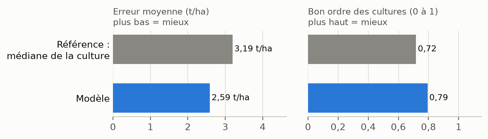
Figure 3 – Le modèle comparé à l'estimation « au bon sens », sur 21 pays jamais vus. Il réduit l'erreur moyenne de 19 % et classe mieux les cultures entre elles (0,79 contre 0,72 sur une échelle de 0 à 1, où 1 signifie un ordre parfait).
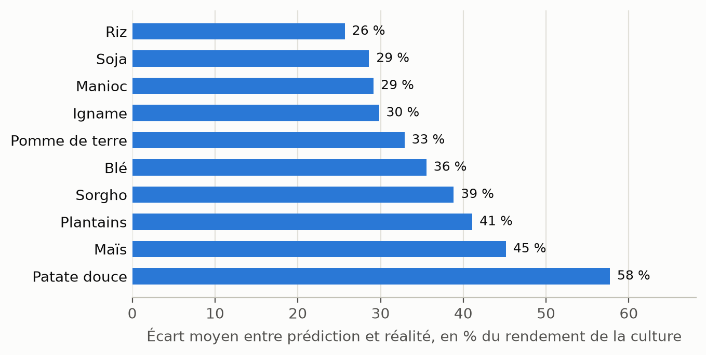
Figure 4 – Précision selon la culture. L'erreur va de 26 % du rendement (riz) à 58 % (patate douce). Les prédictions sont donc à lire comme des ordres de grandeur et des comparaisons entre cultures, pas comme des promesses de récolte.
Pouvait-on faire mieux en réglant davantage le modèle ?
Non : multiplier par sept le nombre de réglages testés n'améliore l'erreur que de 0,04 t/ha, une différence plus de dix fois inférieure aux variations naturelles de la mesure. La marge de progrès est dans les données (mesures à la parcelle), pas dans le modèle.
5. Recommandations agronomiques
5.1 Choisir une culture adaptée à son climat
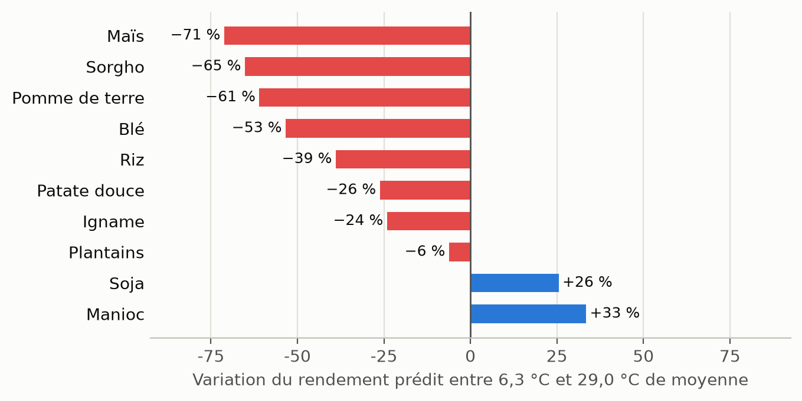
Figure 5 – Ce que la chaleur fait au rendement, selon le modèle (autres conditions fixées à leur valeur habituelle). Le soja a une courbe irrégulière, appuyée sur peu de pays : son résultat est à interpréter avec prudence.
En région chaude (au-delà de 24–25 °C de moyenne annuelle) : privilégier les cultures tolérantes, manioc, igname et plantains. Le maïs, le sorgho, la pomme de terre et le blé y perdent plus de la moitié de leur potentiel.
En région tempérée : la pomme de terre est la plus productive ; parmi les céréales, le maïs et le blé y donnent leurs meilleurs rendements.
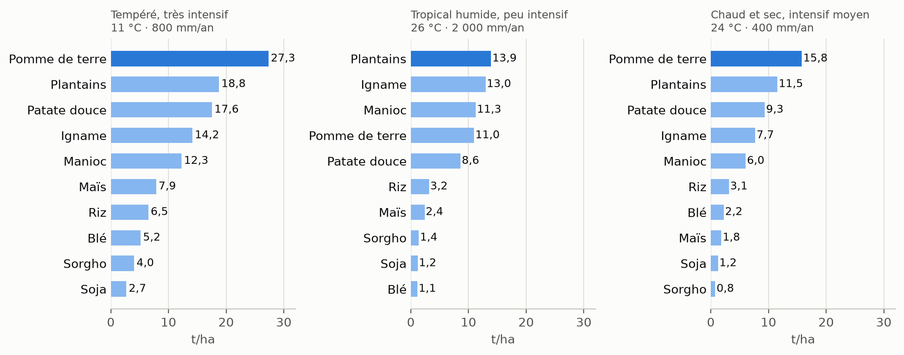
Figure 6 – Le classement de l'outil pour trois profils de région (même échelle). En climat tropical humide, les plantains, l'igname et le manioc passent devant la pomme de terre ; l'ordre des céréales change aussi d'un climat à l'autre.
5.2 Investir dans l'engrais, puis dans l'irrigation
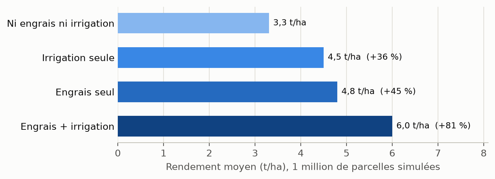
Figure 7 – Effet des pratiques (parcelles simulées).
L'engrais est le levier le plus fort (+45 %), suivi de l'irrigation (+36 %).
Les deux s'additionnent : ensemble, +81 % par rapport à une parcelle sans aucun des deux.
Dans l'outil, une parcelle aux pratiques « moyennes » garde la prédiction du modèle ; avec engrais et irrigation, elle gagne environ +29 % ; sans aucun des deux, elle perd environ −29 %.
Les régions qui utilisent le plus d'intrants obtiennent des rendements 2 à 5 fois supérieurs. Ce lien traduit l'effet de l'ensemble des pratiques modernes (mécanisation, variétés, fertilisation, conseil technique) : il ne permet pas de recommander d'utiliser davantage de pesticides. C'est pourquoi l'application présente ce critère comme un « niveau d'intensification de la région », en cinq crans, et non en tonnes de pesticides.
6. Du rendement au profit
L'objectif d'Agritech Answers est d'aider l'agriculteur à choisir la culture la plus rentable. Or les données fournies ne contiennent ni prix de vente ni coûts de production. L'outil classe donc aujourd'hui les cultures selon leur rendement physique (tonnes par hectare), ce qui n'est pas la même chose que leur rentabilité :
Profit par hectare = rendement (t/ha) × prix de vente (€/t) − coûts de production (€/ha)
Les tubercules arrivent presque toujours en tête en tonnes, car ce sont des cultures lourdes et riches en eau, généralement vendues moins cher à la tonne que les céréales ou le soja. Un classement en tonnes surestime donc mécaniquement leur intérêt économique.
Ce que nous recommandons
Ajouter à l'application le prix local de chaque culture (saisi par l'agriculteur ou issu d'une base de prix à la production) : le classement passerait du rendement au chiffre d'affaires par hectare, sans changer le modèle.
Y ajouter ensuite les coûts (semences, engrais, irrigation) pour obtenir une marge par hectare ; cela permettrait aussi d'évaluer si le surcoût de l'engrais ou de l'irrigation est rentabilisé par le gain de rendement de 45 % ou 36 %.
En attendant, utiliser l'outil pour présélectionner les cultures adaptées au climat de la parcelle, puis comparer leur rentabilité avec les prix du marché local.
Nous n'avons volontairement intégré aucun prix « indicatif » : des chiffres non sourcés donneraient une fausse impression de précision.
7. L'application
L'outil est accessible en ligne, sans installation : agritech-crop-reco.streamlit.app. La première ouverture peut prendre jusqu'à une minute (mise en veille du serveur gratuit).
Dans le panneau de gauche, régler les conditions de la parcelle : température moyenne, pluie annuelle, niveau d'intensification de la région, usage d'engrais et d'irrigation (« non renseigné » = pratique moyenne). Les curseurs sont limités aux conditions présentes dans les données.
Onglet « Prédire pour une culture » : choisir une culture et obtenir le rendement estimé, ainsi que la part due aux pratiques.
Onglet « Recommander une culture » : obtenir le classement des dix cultures (graphique et tableau).
Si une valeur sort des conditions connues du modèle, un avertissement signale que la prédiction est moins fiable.
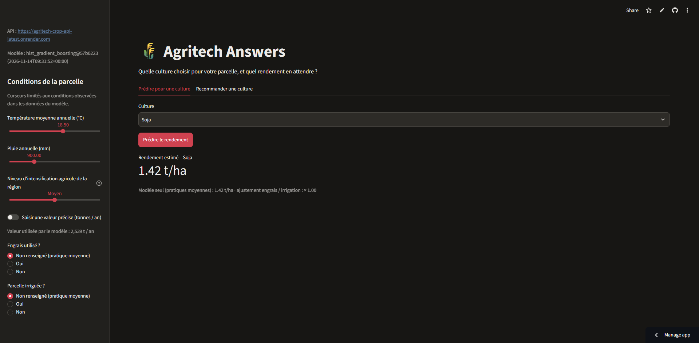
Figure 8 – Prédiction pour une culture (ici le soja, pratiques non renseignées).
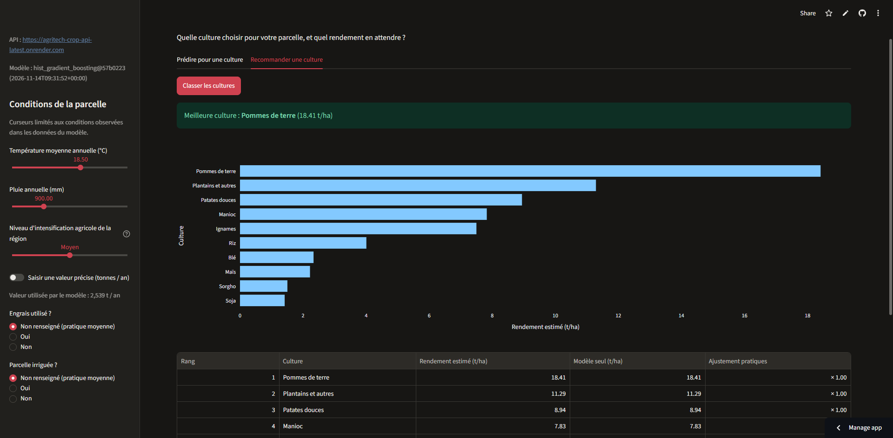
Figure 9 – Classement des dix cultures pour les mêmes conditions.
8. Limites et prochaines étapes
Limite
Conséquence
Piste
Données nationales et annuelles
Prédictions en ordre de grandeur (erreur de 25 à 60 %)
Collecter des mesures à la parcelle : sol, pluie de la saison, doses à l'hectare
Effet de l'engrais et de l'irrigation issu de données simulées
Ordres de grandeur plausibles mais non mesurés sur le terrain
Valider ces gains avec des essais ou des données d'exploitations clientes
Pas de prix ni de coûts
Classement en tonnes, pas en profit
Ajouter prix et coûts (partie 6)
Données 1990–2013
Ne reflètent pas les variétés ni le climat récents
Mettre à jour avec les séries FAO récentes ; le pipeline automatisé le permet
Dix cultures seulement
Pas d'orge ni de coton, par exemple
Élargir avec les autres cultures disponibles à la FAO
Un système prêt à évoluer
L'ensemble est automatisé (annexe B) : à chaque modification, le code est testé, l'application reconstruite et redéployée, et le modèle peut être réentraîné avec un garde-fou qui bloque toute version moins performante que celle en service. Intégrer de nouvelles données ou des prix ne demande donc pas de repartir de zéro.
Annexe A – Suivi des expériences (MLflow)
Chaque essai de modèle est enregistré automatiquement avec ses paramètres et ses résultats, ce qui rend la démarche traçable et reproductible. Deux expériences ont été menées : la sélection du modèle (19 essais, dont la référence) et son optimisation (30 réglages testés).
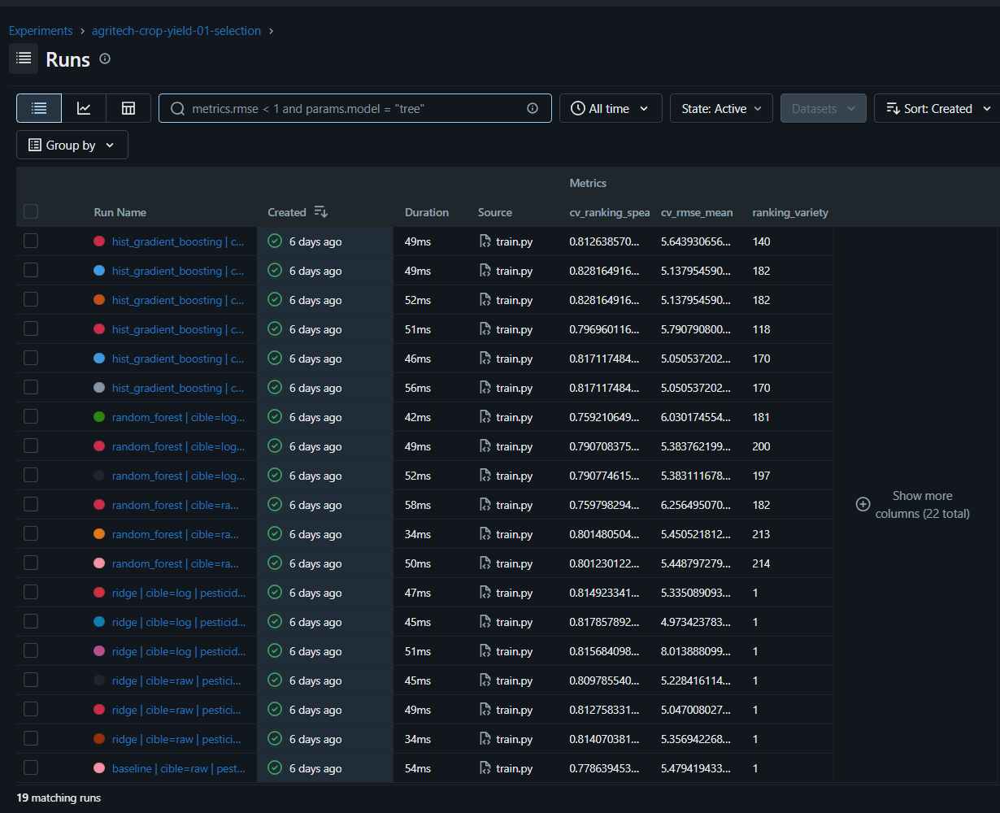
Figure A1 – Sélection du modèle. Les 19 configurations comparées, avec l'erreur en validation croisée par pays (cv_rmse_mean, en t/ha), la qualité du classement des cultures (cv_ranking_spearman_mean) et le nombre de classements différents que le modèle produit selon les conditions (ranking_variety) : les modèles « ridge » valent 1, ils recommandent toujours le même ordre et ont donc été écartés.
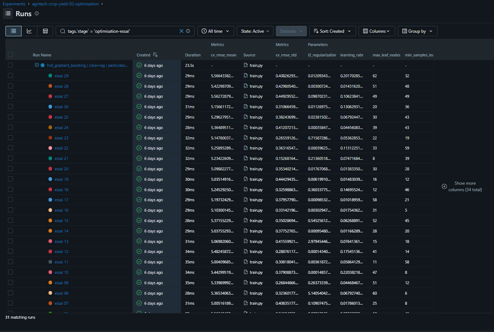
Figure A2 – Optimisation du modèle retenu. Les 30 combinaisons de paramètres testées (« essai 00 » à « essai 29 », regroupés sous le run parent), avec leur erreur en validation croisée (cv_rmse_mean, cv_rmse_std) et les valeurs des paramètres.
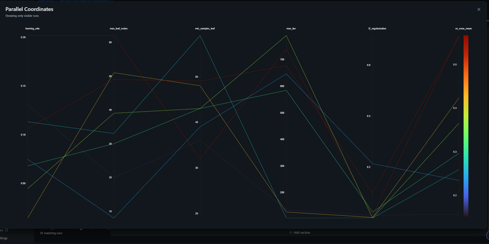
Figure A3 – Lecture visuelle de l'optimisation (vue « coordonnées parallèles », essais affichés à l'écran). Chaque ligne est un essai ; les meilleurs (erreur la plus faible, axe de droite) passent par un taux d'apprentissage et un nombre de feuilles faibles : le modèle gagne à rester simple.
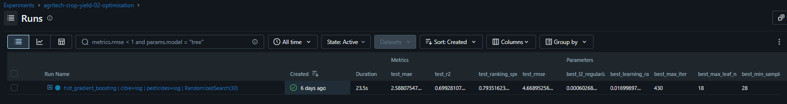
Figure A4 – Modèle final. Paramètres retenus (best_…) et résultats sur les 21 pays de test (test_rmse 4,67 t/ha, test_mae 2,59 t/ha, test_r2 0,70, test_ranking_spearman 0,79).
Annexe B – Architecture et automatisation
DonnéesFAO + parcelles simulées, nettoyées et fusionnées
→
Modèleentraîné, évalué, suivi dans MLflow
→
APIFastAPI dans un conteneur Docker, hébergée sur Render
→
ApplicationStreamlit, hébergée sur Streamlit Community Cloud
L'application ne contient aucun calcul : elle interroge l'API, qui seule détient le modèle. On peut ainsi mettre à jour le modèle sans toucher à l'interface, et inversement.
Automatisme (GitHub Actions)
Déclenchement
Ce qu'il fait
Intégration continue
Chaque proposition de modification
Vérifie la qualité du code, lance 68 tests automatiques, construit et teste l'API et l'application dans leurs conteneurs
Déploiement continu
Chaque version validée
Rejoue tous les contrôles, publie l'image de l'API, la redéploie et vérifie qu'elle répond en ligne
Pipeline d'entraînement
À la demande, ou si les données ou le modèle changent
Prépare les données, réentraîne et évalue le modèle, l'enregistre dans MLflow, et échoue si la performance se dégrade de plus de 5 %
En cas d'échec, l'auteur de la modification est prévenu par courriel, et la version en ligne n'est pas remplacée. La branche principale est protégée : aucune modification n'y entre sans revue et sans contrôles au vert.
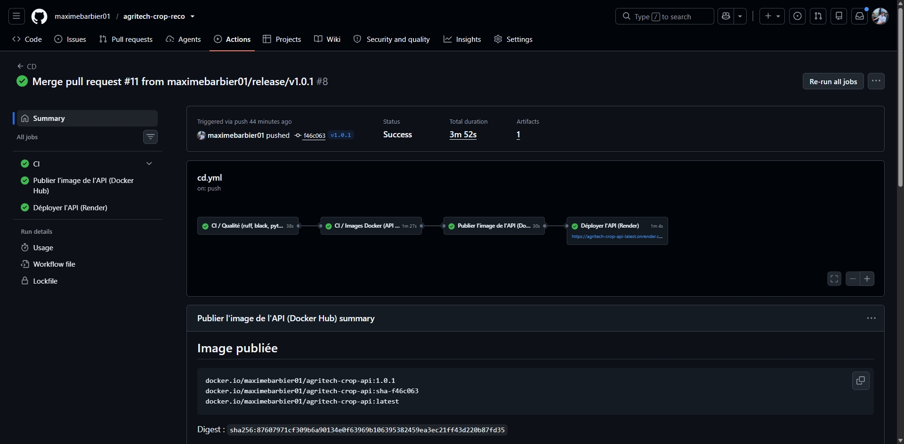
Figure B1 – Le pipeline de déploiement : tests, publication de l'image, déploiement et vérification en ligne.